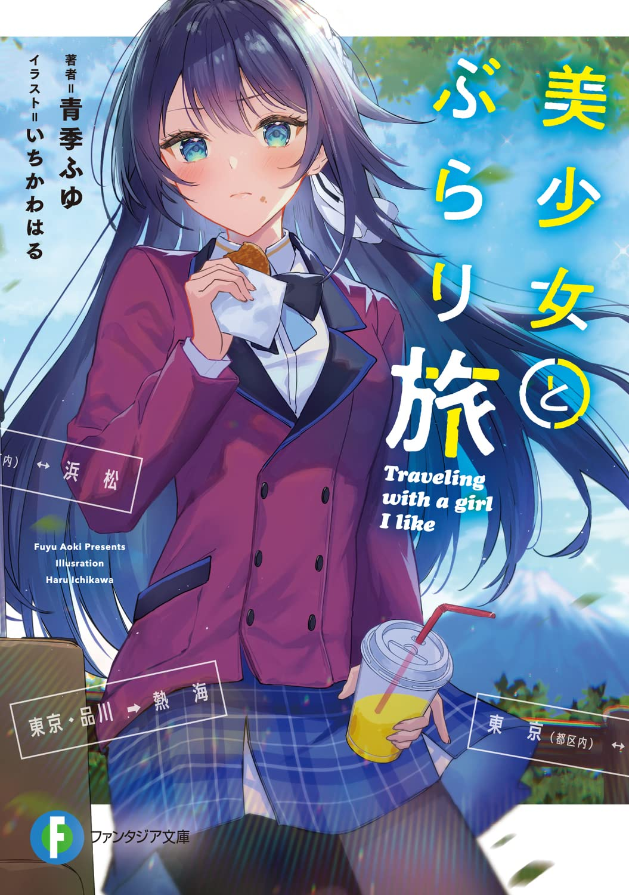

Traveling with a Beautiful Girl
Novel Info's
Status: Completed
Genre: Comedy, Drama, Romance
Author: Aoki Fuyu
Illustrator: いちかわはる
Chapters: 64
Original Publisher: Syosetu
English Publisher: N/A
Fan Translation: Zetro Translation
Description/Sypnosis
Eat, talk, and fall in love with cute girls!
I want to travel and get away from my hectic life! What if you could fulfill that wish with the most beautiful girl in your class?
Kakeru Takahashi, a high school student in Tokyo, is tired with his crammed everyday life and decides to take a trip. When he arrived at the station platform, he encountered his classmate, Riho Nanase.
Seeing her in a state of deep thought, Kakeru says, “Let’s go on a trip!” and then, he invites her to join him——
Even Nanase, who at first was in disbelief, takes off her usual iron mask and begins to enjoy herself to the fullest, dusting off her footbath and tucking into the local delicacies.
“I’m not having fun!”
“I think I liked the sunset.”
“Thank you for taking me on this journey.”
A travel romantic comedy with 120% liberating feeling, spun with a beautiful coup de grace girl with a strange history!
Download Links
Epub & Pdf